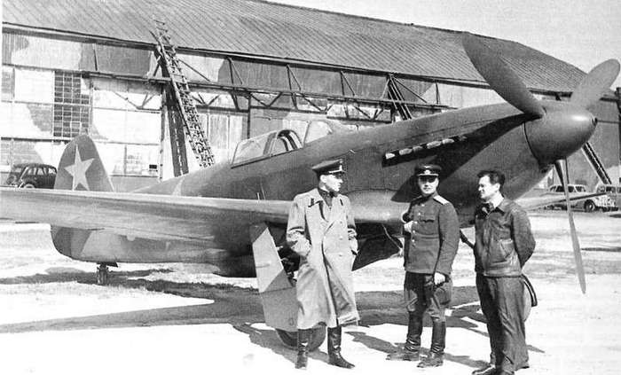
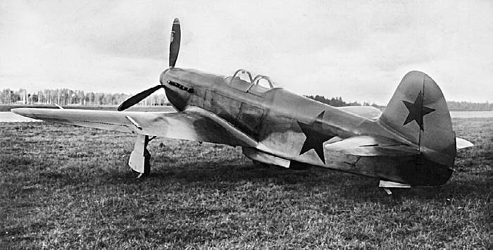
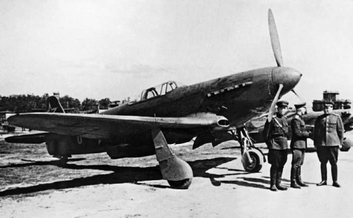

В феврале 1943 г. завершилась постройка истребителя Як-1М. Он представлял собой дальнейшее развитие самолета Як-1, от которого отличался, в основном, меньшим весом и крылом меньшей площади. Летные данные машины заметно улучшились максимальная скорость на высоте 4430 м возросла до 633 км/ч, время набора высоты 5000 м при взлетном весе 2655 кг сократилось до 4,1 минуты. В сентябре 1943 г. года был подготовлен улучшенный вариант- Як-1М Дублер У этого самолета полотняную обшивку хвостовой части фюзеляжа заменили на фанерную толщиной 2 мм, доработали системы охлаждения воды и масла, применили безмачтовую антенну, кольцевой прицел с мушкой сменили на коллиматорный, улучшили бронирование и поставили новый винт.
Летчики-испытатели остались довольны новым истребителем. В их отзывах говорилось, что Як-1М обладает превосходной горизонтальной и особенно вертикальной маневренностью. Максимальная скорость значительно увеличилась по сравнению с серийными самолетами Як. При наличии высоких летных данных самолет остался простым в пилотировании и не требует более высокой подготовки летного состава.
Летчик облета генерал-майор авиации Герой Советского Союза Петр Михайлович Стефановский писал : Учитывая отличные летные данные самолета, хорошее вооружение и большое удобство для летного состава, целесообразно рекомендовать как можно быстрее внедрить данный экземпляр в серийное производство взамен Як-1 и Як-7, необходимо оставить только Як-9 для установки на них в дальнейшем моторов М-107А.
Итак, очередной истребитель получил путевку в жизнь, а заодно и новое имя - Як-3. Первые серийные самолеты направили в 91-й истребительный авиационный полк 2-й воздушной армии, который в июне 1944 г. принимал участие в наступательной Львовской операции. Более 40% летного состава полка составляли молодые пилоты, никогда не принимавшие участия в боях Тем не менее, за полтора месяца они успешно выполнили 430 боевых вылетов провели пять воздушных групповых боев, уничтожив 23 самолета противника. Свои потери составили два Як-3. Вывод пилотов был однозначен : На высотах до 5000 м (выше боев не проводилось) Як-3 превосходит и Me-109 и ФВ-190 Як-3 легко догоняет истребители противника на вертикальном восходящем и нисходящем маневре .
Особенно запомнился летчикам бой 16 июля 1944 года, который показал что самолеты Як-3 с успехом могут вести борьбу с численно превосходящим противником Бой начали десять Як-3 против восьми Ме-109 и четырех ФБ-190 с наращиванием сил с нашей стороны до 18 и до 24 самолетов со стороны противника В итоге было сбито 15 вражеских истребителей и лишь один Як-3.
Первые две сотни серийных Як-3 вооружались пушкой ШВАК и одним синхронным пулеметом УБ, а затем был установлен второй синхронный УБ Из недостатков самолета летчики отмечали малый запас топлива, что делало неэффективной свободную охоту ввиду малой продолжительности боевого вылета. Поэтому Як-3 использовались в основном по вызову наземных постов. Другой недостаток -слабое крепление верхней обшивки крыла. Были даже зафиксированы случаи ее отрыва на выходе самолета из пикирования с максимальной скоростью. Однако бывали случаи, что несмотря на такие повреждения истребители совершали нормальную посадку. Зная опасную особенность машины, летчики старались не выходить на недопустимые режимы, потому неприятности скоро прекратились, и легкий маневренный Як-3 быстро завоевал популярность.
Отличные летные данные машины, многочисленные вражеские самолеты, поверженные в боях на этом истребителе, и высокий эмоциональный подъем, характерный для заключительного периода войны способствовали тому что в сознании многих пилотов Як-3 стал символом советского истребителя предвестником Победы.
Мысли тех, кто летал и сражался на Як-3, пожалуй наиболее образно выразил генерал-майор авиации Герой Советского Союза командир 303-й авиационной дивизии Георгий Нефедович Захаров: До получения частями 303-й дивизии самолета Як-3 я летал на всех истребителях начиная от И-2бис, включая иностранные, а также истребители Як-1, Як-7Б, Як-9 (всех вариантов). В последнее время летал на самолете Ла-5ФЙ считая его наилучшим. С поступлением Як-3 выполнил на нем ряд полетов и сделал следующий вывод подобному истребителю нет конкурентов. В эксплуатации Як-3 прост и доступен техсоставу, устойчив при взлете и при посадке, в пилотаже доступен любому летчику что совершенно исключено для самолета Ла-5ФН. Летчиками 18-го гвардейского полка и отдельного истребительного полка Нормандия Як-3 был освоен после 3-5 часов полета. На самолете Як-3 я провел ряд учебно-воздушных боев с Як-9 и Ла-5 и всегда выходил победителем. Приходилось встречаться на поле боя с Me-109 и Як-3 показал абсолютное превосходство.
Любопытно, что генерал Захаров после войны долгое время не расставался со своим Як-3. И в 50-е годы этот самолет был хоть куда, исправно выжимая свои семьсот километров в час на пикировании .
Бесспорно, Як-3 - один из самых совершенных наших истребителей времен Великой Отечественной войны. Конструкция истребителя была проста и рациональна Основу фюзеляжа составляла стальная трубчатая ферма. С целью сокращения веса ферма фюзеляжа выполнялась зацело с моторамой. В остальном каркас фюзеляжа так же, как и его теоретические обводы не отличался от Як-1, Як-7 и Як-9. В носовой части обшивку фюзеляжа составляли легкосъемные дюралевые капоты, хвостовая часть обшивалась фанерой. Крыло Як-3 неразъемное двухлонжеронное. Профиль крыла - стандартный яковлевский Clark YH с относительной толщиной 14% у корня и 7% на конце крыла. Для сравнения наЯк-1, Як-7, Як-9- 15% у корня и 8% на конце. Крыло имело металлический каркас-лонжероны, нервюры и фанерную обшивку. Как и на Як-9 обшивка приклеивалась к специальным фанерным накладкам, приклепанным к металлическому каркасу заклепками. Опыт боевого применения показал что такое соединение недостаточно прочное.
Уже после войны для Як-3 было сделано крыло с дюралевой обшивкой но серийно этот самолет не строился. Однако металлическое крыло Як-3 вскоре нашло применение на учебно-тренировочном Як-11 и на реактивном Як-15. Точно также на этих самолетах на металлические были заменены деревянные киль и стабилизатор Як-3. На всех истребителях Яковлева для оперения использовался профиль RAF-30.
Силовая установка истребителя состояла из мотора ВК-105ПФ2 мощностью 1240 л.с. с воздушным винтом автоматически изменяемого шага ВИШ-105СВ-01. Бензобаки, как на всех истребителях Яковлева, размещались в крыле, их общий объем составлял 370 литров. Водяной радиатор установили за кабиной пилота. Особенность установки водяного радиатора на Як-3 заключалась в том, что он был глубоко утоплен в фюзеляж, а канал подвода воздуха к радиатору резко расширялся. Это приводило к уменьшению скорости воздушного потока, обдувающего радиатор. В результате эффективность охлаждения повышалась, а аэродинамическое сопротивление самого радиатора, как и его наружного обтекателя существенно снижалось. Тот же принцип использовался и при компоновке маслорадиаторов. Вооружение Як-3 состояло из мотор-пушки ШВАК и двух синхронных пулеметов УБ.
С целью предельного облегчения на Як-3 был установлен минимально необходимый комплект бортового оборудования, позволивший вести бой днем в простых метеусловиях. Обязательным элементом оборудования была радиостанция обеспечивающая двухстороннюю радиосвязь.
Выпуск и уборка шасси, посадочных щитков, управление тормозами на всех истребителях Яковлева осуществлялись пневмосистемой. По сравнению с гидросистемами, используемыми для этих целей на истребителях Лавочкина или с электросистемами американских истребителей, пневматика была менее надежной доставляла много хлопот механикам .Зато экономия веса составляла десятки килограммов.
С появлением Як-3 в нашей стране был налажен массовый выпуск истребителей, значительно превосходивших самолеты противника, завоевано безраздельное господство в воздухе, и итог войны был уже предрешен.
Самолёт Як-3 создал в 1943 году коллектив, возглавляемый А. С. Яковлевым, развивая уже оправдавший себя в боях истребитель Як-1. Конструкторам была поставлена задача повысить живучесть, лётные характеристики и огневую мощь. Для этого им нужно было снизить вес и увеличить мощность и скорость.
Летом 1942 года под Сталинградом у противника были замечены истребители значительно превосходившие наши самолеты по скорости, скороподъемности и вооружении. Яковлев понимал, что его самолет Як-1, срочно нуждается в модернизации. Требовался самолет способный на равных конкурировать с последними модификациями немецких самолетов, а также обеспечить летчикам, пилотирующим самолет, большой запас энерговооруженности и огневой мощи.
В 1942-1943 году, с целью улучшения летных характеристик серийного истребителя Як-1, были изготовлены два самолета с двигателем ВК-105ПФ. Для улучшения аэродинамики самолета были переработаны внешние обводы
Опытный вариант Як-3 назывался Як-1М. От Як-1 он отличался укороченным крылом (его площадь 14,85 квадратных метров вместо 17,15) и уменьшенным хвостовым оперением, полотняная обшивка фюзеляжа была заменена на фанерную. Самолёт получил новую модификацию двигателя — ВК-105ПФ2. Буква «П» в названии двигателя означает пушечный вариант — 20 мм пушка устанавливалась между блоками цилиндров и стреляла сквозь втулку воздушного винта. Для улучшения аэродинамических свойств в планёр также были внесены изменения: изменился масляный радиатор (маслорадиатор, располагавшийся ранее под двигателем ВК-105ПФ2, был перенесён в крыло, а его воздухозаборник был упразднён и заменён входными отверстиями в носке крыла), лобовое стекло состояло теперь из одного куска, что улучшало обзорность.
Як-1М был построен в двух экземплярах — № 1 и «Дублёр». Постройка экземпляра № 1 завершилась 15 февраля 1943 г., заводские испытания проходили с 28 февраля по 7 июня 1943 г. (лётчик П. Я. Федрови, инженер М. А. Григорьев). Госиспытания проводились в два этапа: основные с 7 июня по 4 июля и дополнительные 21-22 июля 1943 г. (лётчик А. Г. Прошаков, ведущий инженер А. Т. Степанец).
Як-1М «Дублёр», постройка которого закончилась 9 сентября 1943 г., проходил заводские испытания 20-30 сентября 1943 г. (лётчик П. Я. Федрови, инженер А.H.Кануков) и госиспытания 6-15 октября 1943 г. (лётчик А. Г. Прошаков, инженер Г. А. Седов, техник Л. В.Hиколаев).
Дополнительные испытания понадобились для определения изменения основных лётно-тактических характеристик после произведённого во время госиспытаний форсирования наддува двигателя М-105ПФ с 1050 до 1100 мм рт. ст. Это позволило сократить время набора высоты в 5000 метров на 0.1 с., уменьшить длину разбега на 15 метров, увеличить набор высоты в боевом развороте на 50 метров и увеличить скорость на высоте до 2400 метров на 5-6 км/ч.
Бронирование обеспечивало защиту лётчика с тыла от пуль калибра 7,92 мм и состояло из бронеспинки толщиной 8,5 мм с обрезанным до плеч верхом и заднего бронестекла, уменьшенного относительно нормального размера.
Як-3 - одноместный, одномоторный поршневой истребитель-моноплан смешанной конструкции. Часть агрегатов самолета были изготовлены из дерева и полотна, а другие из металла. Конструкция Як-3 отличается максимальной простотой и рациональностью.
Фюзеляж - каркас фюзеляжа сварная ферма из хромансилиевых труб. В целях уменьшения веса самолета к передней части фермы фюзеляжа приваривалась моторама. Обшивка передней части фюзеляжа была образована легкосъемными металлическими капотами двигателя, хвостовая часть была обшита фанерой.
Фонарь пилота имел каплевидную форму, что повышало обтекаемость самолета. Фонарь состоял из трех секций, средняя секция была сдвижная и оборудована системой аварийного сброса, которой летчик мог воспользоваться в аварийной ситуации. В кресло пилота была встроена бронеспинка толщиной 9 мм, а в задней секции фонаря было установлено бронестекло.
Крыло - неразъемное, двухлонжеронное, деревянное. Продольный силовой набор крыла лонжероны коробчатого типа, изготовленные из дюраля. Поперечный силовой набор 46 деревянных нервюр. Обшивка работающая фанерная, снаружи крыло было обклеено полотном. Механизация крыла состояла из элеронов и посадочных щитков.
Хвостовое оперение - однокилевое, свободнонесущее, состояло из деревянных киля и стабилизатора. Руль высоты и руль направления металлические, обклеенные полотняной обшивкой. Рули высоты имели весовую и аэродинамическую компенсацию.
Шасси - трехопорное состоящее из двух основных стоек и одной хвостовой. Основные стойки имели телескопическую воздушно-маслянную амортизацию, которые гасили колебания при посадке. Основные стойки убирались с помощью пневмосистеы в направлении фюзеляжа. В убранном положении колеса удерживались замками. Хвостовое колесо находилось в выпущенном положении. Колеса основных стоек были снабжены пневматическими тормозами.
Силовая установка - поршневой 12-цилиндровый V-образный двигатель водяного охлаждения ВК-105ПФ2, мощностью 1240 л.с. Двигатель был оснащен компрессором. Воздушный винт трёхлопастный, с механизмом регулировки шага, диаметр винта 3,0 м. Запуск двигателя осуществлялся с помощью сжатого воздуха из баллона.
Топливо размещалось в четырех топливных баках расположенных в крыльях. Общий объем 370 литров. Баки были защищены протектором и заполнены нейтральным газом. Система охлаждения двигателя - водный радиатор, расположенный в тоннеле под кабиной. Канал подвода воздуха к радиатору резко расширялся, это приводило к тому, что скорость воздушного потока обдувающего радиатор уменьшалась и повышалась эффективность охлаждения.
Вооружение - автоматическая пушка калибра 20 мм и два пулемета калибра 12,7 мм. Пушка устанавливалась в развале цилиндров мотора, стрельба производилась через вал редуктора и втулку винта. Боекомплект пушки 120 снарядов. Пулеметы ведут огонь через воздушный винт. Боекомплект пулеметов 150 патронов на ствол.
Первые самолёты поступили в 91-й истребительный авиационный полк в июле 1944 года. Войсковые испытания проводились с 20 июня по 2 августа 1944 года. Полк, имея в своём составе 41 самолёт Як-3, выполнял задание по завоеванию господства в воздухе в Львовской наступательной операции. В составе полка было опытных лётчиков — 60, а 40 % участвовало в боях впервые. За первые три недели произошло семь встреч с противником. В общей сложности было сбито 23 самолёта: 3 Ju-87, 14 Bf-109G, 6 FW-190А. Боевые потери полка составили два истребителя, три были подбиты огнём зенитной артиллерии, но были посажены на своей территории.
Самым успешным для полка оказался групповой воздушный бой 16 июля 1944 года, где 18 Як-3 выступали против группы из 24 самолётов Bf-109G и FW-190А. Потери противника составили 15 самолётов, из полка был сбит 1 Як-3. Полк нанёс существенный ущерб противнику, активность которого резко снизилась. За последние две недели войсковых испытаний лётчики полка уже не встречали самолёты противника
В результате войсковых испытаний было установлено, что Як-3 наиболее успешно показывает себя в борьбе с истребительной авиацией противника. Использование его для прикрытия наземных войск путём барражирования, сопровождения бомбардировщиков и т. п. менее целесообразно из-за ограниченного запаса горючего (средняя продолжительность боевого вылета 40-45 мин с учётом 20 % запаса горючего). Всего за время войсковых испытаний был произведён 431 боевой вылет.
Як-3 прошёл боевое крещение в июне 1944 года. Первой боевой операцией с участием Як-3 стала Львовско-Сандомирская операция. Массовые поставки самолетов начались к концу лета. Этот истребитель был любим пилотами, он с лёгкостью противостоял таким самолётам люфтваффе, как Messerschmitt BF109 F/G и Focke Wulf FW190. Истребитель был максимально облегчён (в том числе за счёт замены части деревянных элементов на металлические, а также значительного уменьшения запаса горючего) и стал одним из самых лёгких истребителей Второй мировой войны (вес пустого Як-3 составлял 2105 кг, взлётный — 2650 кг), дальность полёта составляла 885 км, максимальная скорость около 650 км/ч. На большинство Як-3 устанавливали одну 20 мм пушку ШВАК и два 12,7 мм пулемёта Березина.
За 1944 год было потеряно 90 , за 1945 год 25 самолетов. Проблемой истребителя была низкая дальность полета, а приборное оснащение делало невозможным ночные полеты.
В первую очередь истребителем Як-3 комплектовались полки, уже освоившие предыдущие модели самолётов Яковлева. Также на Як-3 летали многие советские асы, а также пилоты французской эскадрильи «Нормандия-Неман».
Кроме того, Як-3 применялся в 6-й ГИАП ВВС Черноморского флота. Однако, в виду небольшой дальности полёта большого распространения в морской авиации СССР не получил.
Як-3 успел повоевать и в Японии. В ходе советско-японской войны в августе–сентябре 1945 года 13-й истребительный авиационный полк из состава Хабаровской 5-й авиагруппы ПВО выполнил всего 13 боевых вылетов на этих самолётах.
Этот самолёт по многим характеристикам рядом экспертов считается лучшим поршневым истребителем Второй мировой войны.
На сентябрь 1946 года в строю находилось более 2000 самолетов Як-3, которые постепенно списывались и заменялись на реактивные самолеты.
|  |
|  |
|  |